| 项目名称 | 泰小虎 · 睡眠任务闭环 |
| 创建时间 | 2026-08-12 |
| 文档状态 | 评审中 |
| 负责人 | PM / 技术 Owner / 测试负责人 ⚠️待确认 |
| 版本号 | 修订日期 | 修订人 | 修订内容简述 | 状态 |
|---|---|---|---|---|
| V0.1 | 2026-08-12 | AI 助手 | 基于 v7 C端原型与 punch-admin 后台原型，输出一~九骨架与§四逐页初稿 | 评审中 |
| V0.2 | 2026-08-12 | AI 助手 | 补全薄板块（KPI口径/异常分支/信息架构说明/非功能细节/验收扩展/边界策略），落定「重置不回退」「自定义任务沿用」，新增「每日可完成次数」衍生需求字段 | 评审中 |
| V0.3 | 2026-08-13 | AI 助手 | 草稿：结合《以睡眠健康为主线…分析》补充 §2.4 用户痛点图谱 + 每个功能点「解决痛点」序号化标注（①②③），待确认后定稿推送 | 草稿 |
| V0.4 | 2026-08-13 | AI 助手 | 结合 v8 原型：虎力值改为完成当日全部任务+分享后发放（§3.3.3/§4.1.11）；新增健康打卡页打卡统计条与三态提示条、独立打卡日历页（§4.1.13）、分享海报弹窗含累计天数标题/任务列表截图/下载二维码（§4.1.10）；同步修订 §3.1 主流程与验收 AC2/AC15 | 评审中 |
泰小虎 App 用户在健康场景下缺乏围绕睡眠/习惯的低门槛任务闭环。当前首页、我的睡眠、健康打卡等页面相互独立，缺少把「睡眠数据→任务推荐→打卡完成→分享激励」串起来的主线，导致用户打卡动力不足、健康档案行为数据缺失。
本期围绕「拉新促活 → 行为养成 → 分享传播」三层目标设定指标。下列为指标口径（计算方式），具体目标阈值由业务方给定（标 ⚠️ 待确认）。
| 指标 | 口径定义 | 目标阈值 |
|---|---|---|
| DAU / 日活提升 | 接入睡眠任务闭环后的 App 日活跃用户数，相对接入前基线提升比例 | ⚠️ 待确认 @产品/运营 |
| 任务领取率 | 当日开启健康打卡 UV / 当日触达任务入口 UV（含 PUSH、首页、我的睡眠入口） | ⚠️ 待确认 @产品/运营 |
| 首任务完成率 | 当日完成首个任务 UV / 当日开启健康打卡 UV | ⚠️ 待确认 @产品/运营 |
| 健康档案行为字段完整度 | 完成过健康任务用户中，健康档案行为字段（睡眠/打卡/任务）非空占比 | ⚠️ 待确认 @产品/运营 |
| 分享传播增量 | 发起分享 UV / 完成首任务 UV；分享回流带来的新注册/唤醒 UV | ⚠️ 待确认 @产品/运营 |
本节将《以睡眠健康为主线，对泰小虎APP产品形态进行分析》中梳理的六大用户痛点作为本期需求的价值锚点，并把 §四 每个功能点对应到其解决的痛点，确保「功能不为做而做」。痛点归类如下：
| 编号 | 用户痛点 | 核心解法（摘自分析文档） | 对应维度 |
|---|---|---|---|
| P1 | 为什么每天要打开 App？（动力问题） | 主动唤醒 + 情绪价值 + 即时价值交付（晨间 PUSH、打开即给晨报） | 行动/基础·情绪/奖赏 |
| P2 | 怎么记录更简单？（门槛问题） | 无感自动化 + 一键式盲操 + AI 语音盲录 | 理智/功能 |
| P3 | 怎么坚持去打卡？（习惯与粘性问题） | 习惯梯级激励 + 不中断容错机制（补签容错、连续打卡阶梯奖励） | 心理/习惯 |
| P4 | 健康任务如何通用且促进使用？（履约问题） | 模组化任务库 + 场景化原子任务 + 差异化履约 | 理智/履约 |
| P5 | 后续怎么转化？（商业闭环问题） | 分析-任务-商品/服务自然链路闭环 | 商业/转化 |
| P6 | 打卡信息如何融入健康社区？（社交与共鸣问题） | 脱敏打卡海报 + 话题同频 + 泰小虎 AI 社区驻场 | 情感/社交 |
各功能点对应的痛点标注见 §四 每个功能点标题下方的「解决痛点」说明。
横向泳道：用户端 / 服务端 / 平台端后台。
上图为三泳道业务流程架构：用户端动作（收 PUSH → 进首页/睡眠 → 领取打卡 → 完成分享 → 得虎力值）由服务端任务引擎驱动，服务端按后台配置的「任务模板 / 候选池 / 固定首批规则 / 分享弹窗」下发任务并回流数据至后台监控。
涉及终端：用户端（Android / iOS App）+ 平台端后台（任务模板、候选池、规则、分享弹窗，以及「每日任务重置」与「PUSH 推送」两个独立定时任务的配置）。
两个相互独立定时任务：① 每日 03:00（凌晨三点）执行任务重置——批量将用户昨日未完成任务置为过期、连续天数清零、生成新日实例；② 每日 06:00（早上六点）执行PUSH 推送——向目标用户推送睡眠日报。两者分属不同定时任务，不可合并为同一时点。
主流程：
| 层级 | C端 | 平台端后台 | 数据层 |
|---|---|---|---|
| 展示层 | 消息通知、首页、我的睡眠、健康打卡、开启健康打卡、任务详情、虎力值 | 任务模板管理、候选任务池、固定首批规则、每日首完成分享弹窗 | 前端本地状态 + 服务端接口 |
| 配置层 | - | 任务模板、推荐池 inPool 标记、规则（标签/已选任务/生效时间）、分享弹窗配置 | 《任务模板表》《候选任务池表》《固定首批规则表》《分享弹窗配置表》 |
| 数据层 | 用户任务实例、完成记录、虎力值 | 任务状态机、规则状态、下发日志 | 用户任务日表、任务完成记录表、虎力值流水表 |
三层映射说明：
配置层变更（如新增任务模板、调整固定规则、改分享文案）经服务端任务引擎实时/定时下发，不依赖 C端发版。
| 起始状态 | 触发动作 | 前置条件 | 目标状态 |
|---|---|---|---|
| 草稿 | 上线 | 表单校验通过 | 上线 |
| 上线 | 下线 | - | 下线 |
| 下线 | 删除 | 无进行中的用户实例/未关联生效规则 | 已删除（物理/逻辑） |
| 上线 | 编辑 | 不允许，需先下线 | - |
| 下线 | 编辑 | 不允许，仅可删除 | - |
| 起始状态 | 触发动作 | 前置条件 | 目标状态 |
|---|---|---|---|
| 未领取 | 领取 | 任务在候选池/固定规则生效 | 已领取 |
| 已领取 | 完成 | 当前日期未超时、满足任务类型规则 | 已完成 |
| 已完成 | 每日重置 | 到达每日重置时点（默认 03:00，独立于 PUSH 推送时点 06:00） | 未领取（新实例） |
| 已领取 | 断签/过期 | 连续打卡任务未在下一日完成 | 连续天数清零重计 |
本期将「打卡天数」与「虎力值」两项激励解耦：
需求影响范围：新增泰小虎 PUSH 通道，需接入现有消息推送能力；不影响旧版用户（未登录/未授权推送者静默）。涉及终端：Android / iOS App（接收端）+ 平台端后台（PUSH 推送定时任务配置，与任务重置定时任务相互独立）。
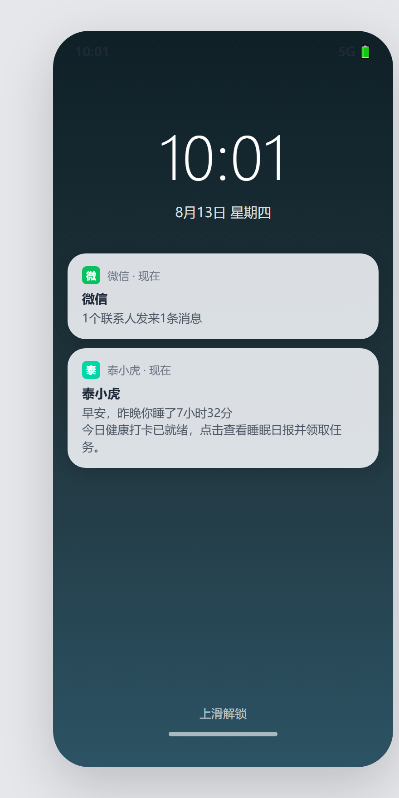
界面与展示规则：锁屏/通知中心显示泰小虎 PUSH 卡片，标题「泰小虎」，正文包含睡眠日报摘要与「点击查看」引导。
业务逻辑与边界条件：
| 字段名称 | 取值逻辑说明 |
|---|---|
| 通知标题 | 固定文案「泰小虎」，取《消息推送配置表》.app_name |
| 通知正文 | 取服务端动态组装：睡眠时长 + 引导语 |
| 跳转目标 | App 首页 deeplink |
需求影响范围：在现有首页插入睡眠任务入口卡片，不替换顶部 Tab 与问答卡片；旧版无任务态兼容。涉及终端：Android / iOS App。
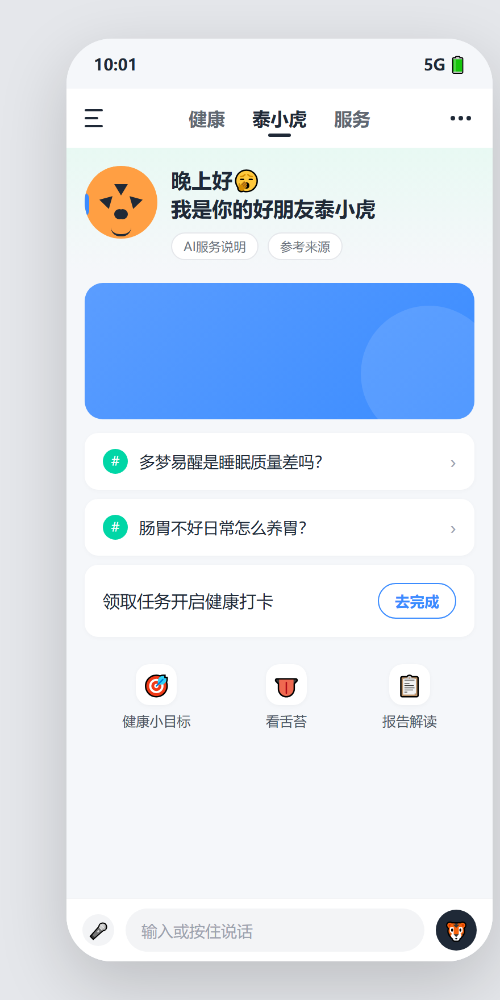
界面与展示规则：任务入口卡片位于首页问答卡片下方、快捷操作上方，根据用户当日任务状态展示三态：
业务逻辑与边界条件：
| 功能名称 | 功能说明 | 备注 |
|---|---|---|
| 去完成 | 根据任务状态进入领取/完成/详情流程 | 首页任务卡片 |
| 更多任务 | 跳转健康打卡列表 | 全部完成态 |
| 健康Tab | 跳转「我的睡眠」 | 顶部导航 |
| 字段名称 | 取值逻辑说明 |
|---|---|
| 卡片文案 | 由 state.myTasks + state.completedToday 派生，前端本地计算 |
| 首个未完成任务 | 取《用户任务实例日表》今日已领取且未完成记录的第一条 |
| 任务名称 | 取《任务模板表》.name |
需求影响范围：新增首页 modal，每日首次进入首页触发；需控制展示频次避免打扰。涉及终端：Android / iOS App。
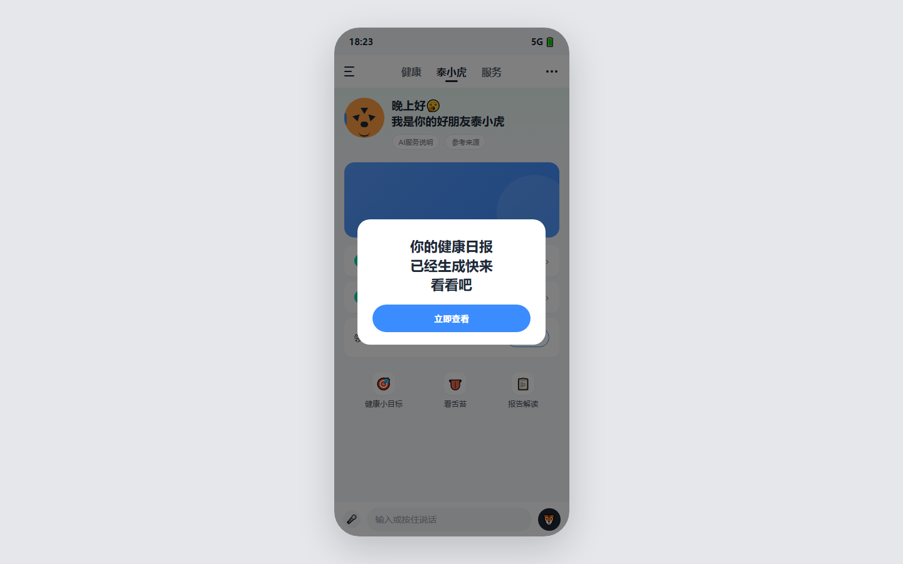
界面与展示规则：居中单按钮弹窗，标题「你的健康日报已经生成快来看看吧」，按钮「立即查看」。
业务逻辑与边界条件：
| 字段名称 | 取值逻辑说明 |
|---|---|
| 弹窗标题 | 固定文案，取《文案配置表》.daily_report_title |
| 展示控制 | 本地标记 last_daily_report_date + 服务端「今日日报是否生成」接口 |
需求影响范围：在「我的睡眠」页新增任务卡片，引导用户领取/完成健康任务；睡眠数据展示区保持现有。涉及终端：Android / iOS App。
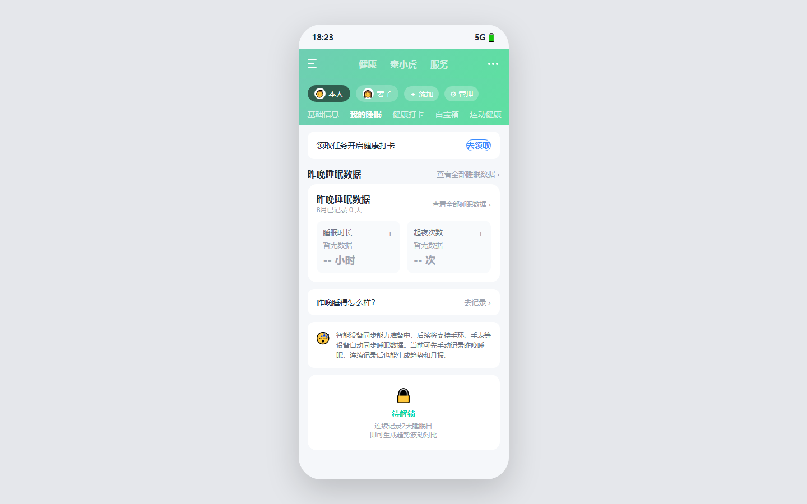
界面与展示规则：状态与首页卡片一致：
业务逻辑与边界条件：
| 字段名称 | 取值逻辑说明 |
|---|---|
| 任务卡片状态 | 由《用户任务实例日表》今日记录派生 |
| 睡眠数据 | 取《睡眠记录表》昨日记录，无则展示「暂无数据」 |
需求影响范围：对「健康打卡」Tab 进行大改版，移除旧版非任务内容，仅保留任务列表与自定义任务入口。涉及终端：Android / iOS App。
列表态：
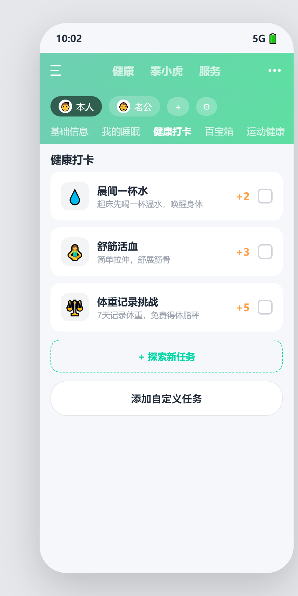
空态：
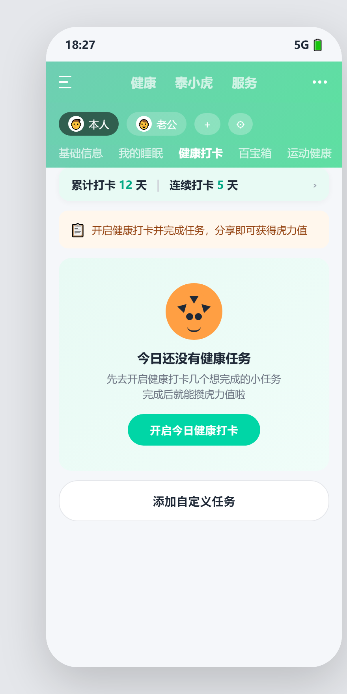
界面与展示规则：
业务逻辑与边界条件：
前置条件与权限：用户须处于登录态方可操作本人任务；未登录时点击任务/领取先拉起登录。任务完成仅作用于当前用户自身实例，无跨用户数据权限。
| 字段名称 | 需求说明 | 备注 |
|---|---|---|
| 任务图标 | 任务模板配置的 emoji 图标 | 展示在列表左侧 |
| 任务名称 | 取任务模板名称 | 单行，超出省略 |
| 任务描述 | 一句话说明任务行为 | 单行，超出省略 |
| 奖励虎力值 | 完成任务可获得的虎力值 | +N 展示 |
| 完成状态 | 未完成/已完成 | 已完成背景高亮并显示勾选 |
| 功能名称 | 功能说明 | 备注 |
|---|---|---|
| 完成任务 | 点击任务行完成打卡 | 无详情直接完成，有详情先跳详情 |
| 开启今日健康打卡 | 跳转开启健康打卡页 | 空态卡片 |
| 探索新任务 | 跳转开启健康打卡页 | 列表底部 |
| 添加自定义任务 | 跳转添加自定义任务页 | 列表底部/空态 |
| 打卡统计条 | 点击跳转打卡日历独立页 | 子 Tab 栏下方，展示累计/连续打卡天数 |
| 赚取更多虎力值 | 跳转虎力值任务中心 | 全部完成后 |
| 字段名称 | 取值逻辑说明 |
|---|---|
| 任务列表 | 取《用户任务实例日表》.task_id 关联《任务模板表》 |
| 完成状态 | 取《用户任务实例日表》.completed_at 是否非空 |
| 虎力值奖励 | 取《任务模板表》.points |
需求影响范围：新增独立开启健康打卡页，从候选池随机推荐 5 个任务，支持多选与换一批。涉及终端：Android / iOS App。
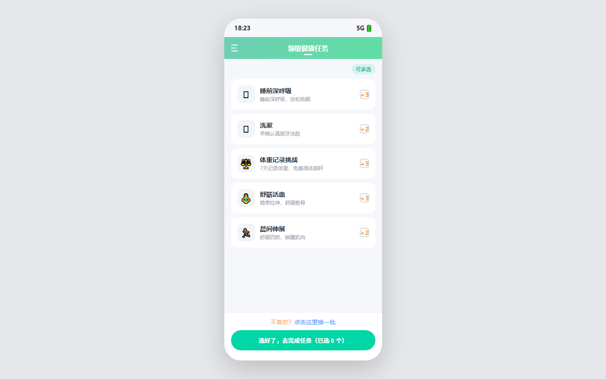
界面与展示规则：
业务逻辑与边界条件：
| 查询条件 | 查询说明 |
|---|---|
| 候选池 | 取后台「候选任务池」中 inPool=true 且状态为「上线」的任务模板 |
| 排除已领取 | 过滤掉用户今日已领取的 task_id |
| 固定首批 | 命中用户标签时，优先从《固定首批规则表》取最多 3 个固定任务前置展示 |
| 字段名称 | 取值逻辑说明 |
|---|---|
| 候选任务池 | 调「推荐任务池」接口：返回 inPool=true & status=online 的任务列表 |
| 已开启健康打卡 | 取《用户任务实例日表》.task_id |
| 用户标签 | 取《用户画像表》.tags |
| 固定规则 | 取《固定首批规则表》生效中记录 |
需求影响范围：自定义任务为已有功能，本期 C端沿用现有「添加自定义任务」入口与记录能力，仅确保其在改版后的健康打卡页正常可达（列表底部/空态的「添加自定义任务」按钮跳转）。涉及终端：Android / iOS App。
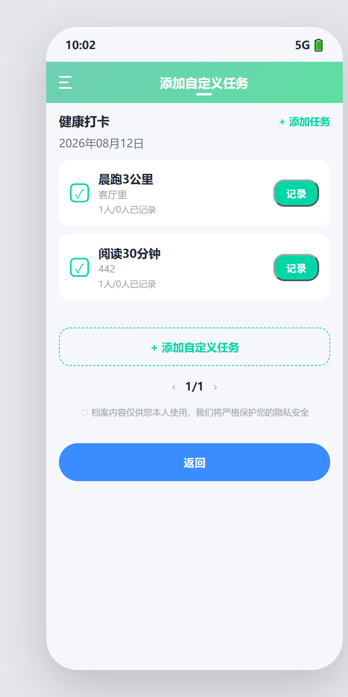
沿用现有功能。
4.1.8 任务详情（活动H5） 本期新增需求影响范围：为有详情页的任务（如「7天体重记录免费得体脂秤」）提供 H5/原生详情页承载；无详情任务直接完成。涉及终端：Android / iOS App。
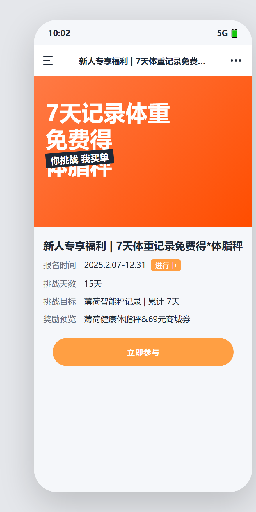
界面与展示规则：顶部标题（长标题截断省略）、Banner、报名信息、挑战天数、目标、奖励预览、底部「立即参与」按钮。
业务逻辑与边界条件：
| 字段名称 | 取值逻辑说明 |
|---|---|
| 详情页内容 | 取《任务模板表》.detail.h5_url 或 .detail.content 渲染 |
| 报名/活动时间 | 取《任务模板表》.detail.activity_time |
| 奖励预览 | 取《任务模板表》.detail.reward_desc |
需求影响范围：每日首次完成任务后触发，引导分享或继续开启健康打卡。涉及终端：Android / iOS App。
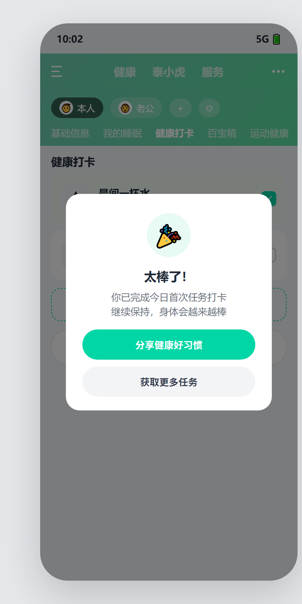
界面与展示规则：居中奖杯图标、标题「太棒了！」、描述「你已完成今日首次任务打卡…」、双按钮「分享健康好习惯」「获取更多任务」。
业务逻辑与边界条件：
| 字段名称 | 取值逻辑说明 |
|---|---|
| 弹窗文案 | 取后台「每日首完成分享弹窗配置」.title / .body |
| 展示频次 | 本地记录 completionShown_date，每日首次完成触发 |
C端每日完成弹窗样式为固定设计规范，除背景图、标题、正文、按钮文案外，颜色/字号/圆角/尺寸/动效均不通过后台配置，确保全平台体验一致。
| 元素 | 样式规格 | 备注 |
|---|---|---|
| 遮罩层 | 颜色 #000000，透明度 50%；点击可关闭弹窗 | 与分享面板共用同一遮罩组件 |
| 弹窗容器 | 宽度 280dp（iOS 270pt），最大 80% 屏宽；高度随内容自适应；垂直居中；圆角 16dp；背景 #FFFFFF | 无背景图时为白底 |
| 弹窗背景图 | 取后台配置，按比例缩放覆盖整个弹窗容器（object-fit: cover） | 上传图需保证文字区域可读性，建议上下留白 |
| 奖杯图标 | 尺寸 72×72dp，居中；主色 #FFC107（金），无描边/阴影 | 可用 Lottie 或静态图 |
| 标题 | 字号 20sp，字重 Bold，颜色 #333333，居中，距图标 16dp | 后台 title 字段 |
| 描述 | 字号 14sp，颜色 #666666，居中，行高 1.5，距标题 8dp | 后台 body 字段，空时不渲染 |
| 主按钮「分享健康好习惯」 | 宽度 100%（扣除内边距），高度 44dp，圆角 22dp；背景品牌绿 #07C160；文字 #FFFFFF，16sp，Medium；距描述 24dp | 文案对应后台「按钮文案」字段 |
| 次按钮「获取更多任务」 | 同主按钮尺寸；背景透明，文字品牌绿 #07C160，16sp，Medium；1dp 品牌绿描边；距主按钮 12dp | — |
| 关闭 icon（可选） | 右上角 24×24dp，#999999；默认不展示，点击遮罩关闭 | 如运营需要可全局开启 |
| 入场动效 | 弹窗从 0.9 缩放到 1.0 + 透明度 0→1，时长 250ms；遮罩渐显 200ms | 使用系统默认弹性曲线 |
| 退场动效 | 弹窗缩放 1.0→0.95 + 透明度 1→0，时长 200ms；遮罩渐隐 200ms | — |
需求影响范围：从每日完成弹窗唤起，提供微信好友/保存本地两渠道；具体分享能力复用 App 现有分享 SDK。涉及终端：Android / iOS App。
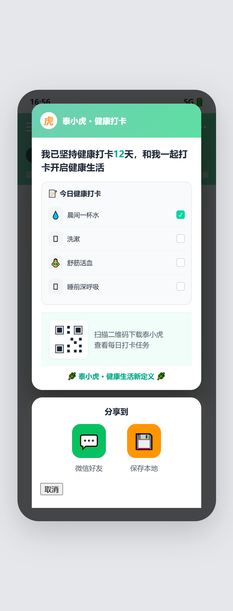
界面与展示规则：全屏海报式卡片弹窗（Poster），点击遮罩关闭。卡片结构自上而下：
业务逻辑与边界条件：
| 字段名称 | 取值逻辑说明 |
|---|---|
| 分享标题 | 取「我已坚持健康打卡 X 天，和我一起打卡开启健康生活」，X=累计打卡天数（后台可配置固定前缀文案） |
| 今日任务列表截图 | 取《用户任务实例日表》当日任务动态渲染 |
| 下载二维码 | 取后台「分享弹窗配置」中配置的泰小虎下载二维码 |
| 分享海报背景 | 取后台配置并透传分享 SDK |
分享弹窗为全屏海报式卡片（Poster），视觉样式固定；海报标题（含累计打卡天数）、任务列表截图、二维码及提示文案由 C端按本规范渲染，仅分享渠道项文案可通过后台配置（本期微信好友 / 保存本地 / 取消 前端写死）。
| 元素 | 样式规格 | 备注 |
|---|---|---|
| 遮罩层 | 颜色 #000000，透明度 50%；点击关闭海报 | — |
| 海报卡片 | 居中卡片，圆角 16dp，背景 #FFFFFF，高度随内容自适应 | — |
| 顶部品牌区 | 左侧泰小虎 logo + 「泰小虎 · 健康打卡」 | — |
| 海报标题 | 字号 18sp，字重 Bold，颜色 #1f2937，居中 | 「我已坚持健康打卡 X 天，和我一起打卡开启健康生活」，X=累计打卡天数 |
| 任务列表截图区 | 展示「今日健康打卡」标题 + 当日任务列表卡片 | 动态填充当日任务 |
| 二维码区 | 左下二维码（占位，上线替换）+ 提示「扫描二维码下载泰小虎 查看每日打卡任务」 | — |
| 分享操作栏 | 居中：微信好友 / 保存本地 两渠道项，下方「取消」按钮 | 渠道项图标圆角方形 56×56dp |
| 入场动效 | 海报缩放 0.9→1.0 + 透明度 0→1，时长 250ms；遮罩渐显 200ms | — |
| 退场动效 | 海报缩放 1.0→0.95 + 透明度 1→0，时长 200ms；遮罩渐隐 200ms | — |
分享弹窗实际下发的分享内容由后台「每日首完成分享弹窗配置」提供，C端按以下规格组装分享卡片与分享面板：
| 内容项 | 取值 / 默认值 | 说明 | 状态 |
|---|---|---|---|
| 分享标题 | 默认「我已坚持健康打卡 X 天，和我一起打卡开启健康生活」（X=累计打卡天数） | 分享海报主标题 | ⚠️ 待确认 @产品：文案与累计天数口径 |
| 分享图片（海报） | 后台上传背景图；缺省用默认渐变海报 | 微信会话缩略图 thumb + 落地页头图 | ⚠️ 待确认 @产品：图尺寸 / 比例 / 默认素材 |
| 分享文案 | 默认「每天打卡，养成健康好习惯，领取虎力值换好礼」 | 微信会话描述 desc | ⚠️ 待确认 @产品：参照既有分享弹窗需求 |
| 落地页链接 | 默认 https://h5.taixiaohu.com/sleep-share?from=share&task=first | 点击分享卡片 / 链接跳转目标（见 4.1.12） | ⚠️ 待确认 @产品/研发：落地页域名与路径 |
需求影响范围：展示当前虎力值与每日任务入口，引导用户继续赚虎力值。涉及终端：Android / iOS App。
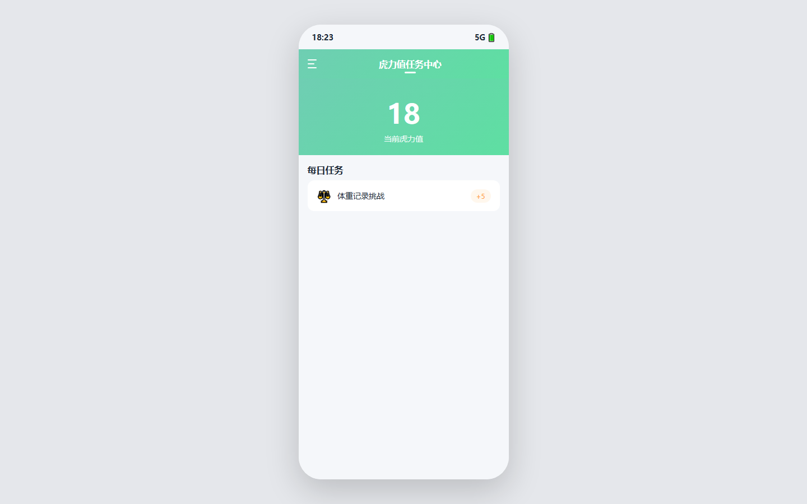
界面与展示规则：顶部绿渐变头显示当前虎力值，下方「每日任务」列表展示高收益/有详情任务。
业务逻辑与边界条件：
| 字段名称 | 取值逻辑说明 |
|---|---|
| 当前虎力值 | 取《虎力值账户表》.balance |
| 每日任务 | 取《任务模板表》中 hasDetail=true 的任务 |
需求影响范围：分享卡片 / 链接点击后打开的落地页（H5），承载分享内容展示与 App 拉新转化。涉及终端：H5（微信 / 浏览器内打开）+ Android / iOS App（深链回跳）。
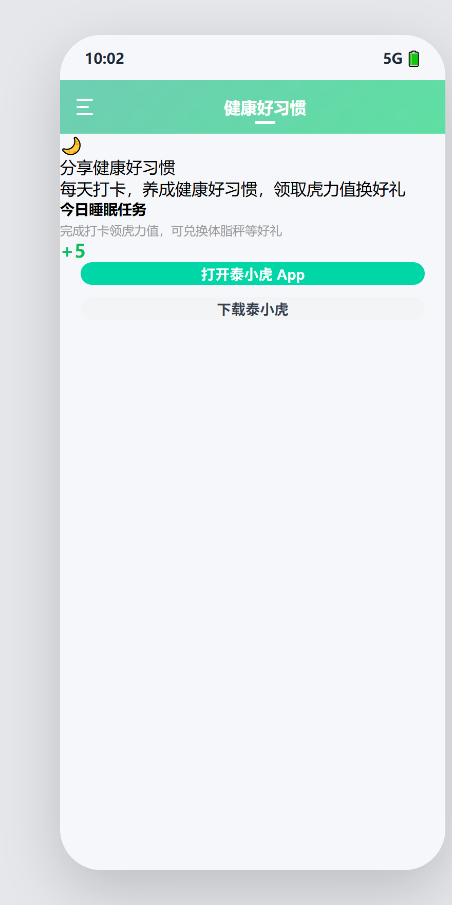
界面与展示规则：落地页顶部展示分享海报（取分享图片），中部为标题与文案（取分享标题 / 文案），下方展示任务卡片（含虎力值奖励），底部「打开泰小虎 App」「下载泰小虎」双按钮。
业务逻辑与边界条件：
| 字段名称 | 取值逻辑说明 |
|---|---|
| 落地页海报 / 标题 / 文案 | 复用《分享弹窗配置表》.thumb（缩略图）/ .title / .body / .link |
| 任务卡片 | 取《任务模板表》高收益任务 + reward |
| 回跳 scheme | 固定 taixiaohu://sleep-task（⚠️ 待确认 @研发） |
需求影响范围：新增独立「打卡日历」页，展示累计/连续打卡天数与月历，点击健康打卡页统计条进入。涉及终端：Android / iOS App。
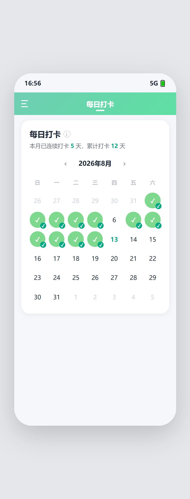
界面与展示规则：
业务逻辑与边界条件：
| 字段名称 | 取值逻辑说明 |
|---|---|
| 累计打卡天数 | 取《用户任务实例日表》派生的打卡日历记录，每日首次完成去重计数 |
| 已连续打卡天数 | 按自然日连续有打卡的最大连续天数 |
| 已打卡日期集合 | 由服务端按每日首次完成任务回写，用于月历绿色对勾标记 |
需求影响范围：后台新增任务模板生命周期管理能力，替代原分散配置。涉及终端：平台端后台（运营/产品）。
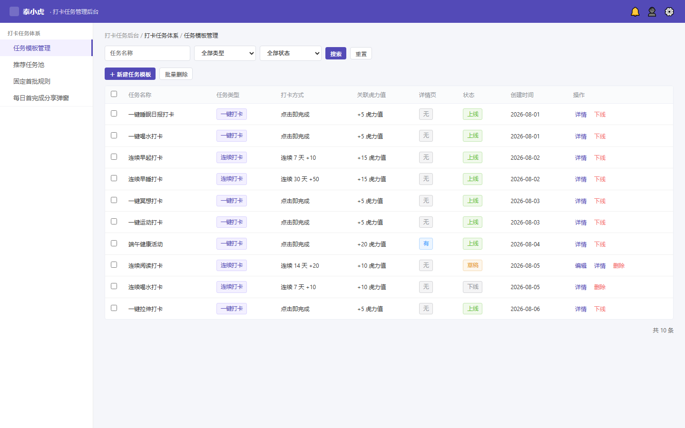
界面与展示规则：左侧打卡任务体系导航，主区为任务模板列表，含筛选条件、批量操作占位、新建按钮、分页。
前置条件与权限：仅运营/产品角色可见与操作系统；编辑操作仅草稿态开放，上线/下线/删除受状态机约束（见 3.3.1）。批量操作本期为占位，暂不开放。
| 字段名称 | 需求说明 | 备注 |
|---|---|---|
| 任务名称 | 任务模板名称 | 支持模糊搜索 |
| 任务类型 | 一键打卡 / 连续打卡 | 筛选条件 |
| 任务说明 | cfgSummary 摘要 | 展示规则简述 |
| 奖励虎力值 | +N 虎力值 | 列表展示 |
| 详情页 | 有/无 | 是否有 H5 详情页 |
| 状态 | 草稿/上线/下线 | 状态标签 |
| 创建时间 | YYYY-MM-DD HH:mm | 默认倒序 |
| 操作 | 编辑/详情/下线/删除 | 根据状态显示不同操作 |
| 功能名称 | 功能说明 | 备注 |
|---|---|---|
| 新建任务模板 | 跳转新建任务模板表单 | 仅列表页 |
| 编辑 | 进入编辑态，仅草稿可编辑 | 状态=草稿 |
| 详情 | 查看任务模板详情 | 各状态 |
| 上线 | 将草稿发布上线 | 状态=草稿 |
| 下线 | 将上线任务下线 | 状态=上线 |
| 删除 | 删除草稿/下线任务 | 状态=草稿/下线，需二次确认 |
| 查询条件 | 查询说明 |
|---|---|
| 任务名称 | 文本输入，模糊匹配 |
| 任务类型 | 下拉：一键打卡 / 连续打卡 / 全部 |
| 状态 | 下拉：草稿 / 上线 / 下线 / 全部 |
| 字段名称 | 取值逻辑说明 |
|---|---|
| 列表数据 | 取《任务模板表》，按创建时间倒序，默认分页 10/20/50 |
| 状态标签 | 取《任务模板表》.status 映射 STATUS 字典 |
| 类型标签 | 取《任务模板表》.type 映射 TASK_TYPES 字典 |
需求影响范围：统一任务模板的创建与编辑入口，含任务类型、奖励、重置规则、连续打卡配置。涉及终端：平台端后台。
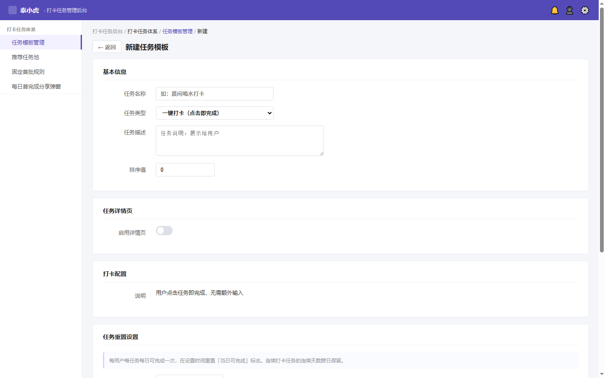
界面与展示规则：表单分基础信息与规则配置：
业务逻辑与边界条件：
| 区域 | 字段 | 功能逻辑说明 | 备注 |
|---|---|---|---|
| 基础信息 | 任务名称 | 必填，文本，长度 ⚠️ 待确认 | 唯一性待确认 |
| 基础信息 | 任务类型 | 单选：一键打卡 / 连续打卡 | 决定 cfg 字段 |
| 基础信息 | 任务描述 | 非必填，文本 | — |
| 基础信息 | 奖励虎力值 | 必填，正整数 | — |
| 连续打卡配置 | 连续天数 | 任务类型=连续打卡时必填，正整数，默认 7 | — |
| 连续打卡配置 | 额外奖励 | 任务类型=连续打卡时必填，正整数，默认 10 | — |
| 重置设置 | 重置周期 | 下拉：每天（本期唯一选项） | 本期唯一选项 |
| 重置设置 | 重置时间 | HH:mm，默认 03:00 | — |
| 重置设置 | 每日可完成次数 | ⚠️ 待确认 @产品/研发：是否支持每日可完成 N 次（当前模型为每日 1 次完成即止）；若支持，此处配置正整数，默认 1 | 衍生需求，详见 §九 |
| 字段名称 | 取值逻辑说明 |
|---|---|
| 表单默认值 | 新建：系统默认值；编辑：取《任务模板表》当前记录 |
| 任务类型枚举 | 系统字典 TASK_TYPES |
需求影响范围：展示任务模板完整信息，支持从详情进入编辑（仅草稿）。涉及终端：平台端后台。
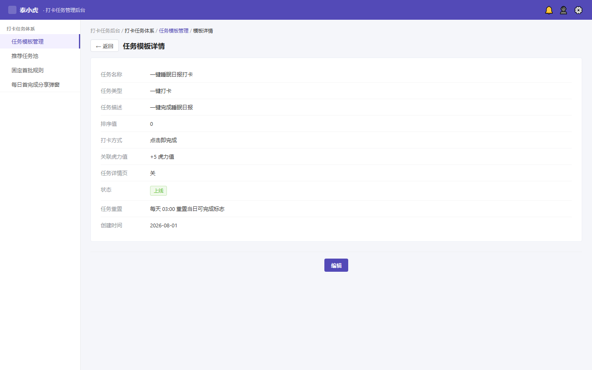
界面与展示规则：只读展示各字段，含状态、创建/更新时间、重置规则。
业务逻辑与边界条件：
| 字段名称 | 取值逻辑说明 |
|---|---|
| 详情字段 | 取《任务模板表》单条记录全字段 |
需求影响范围：运营可控制哪些任务进入 C端领取池，并查看在池状态。涉及终端：平台端后台。
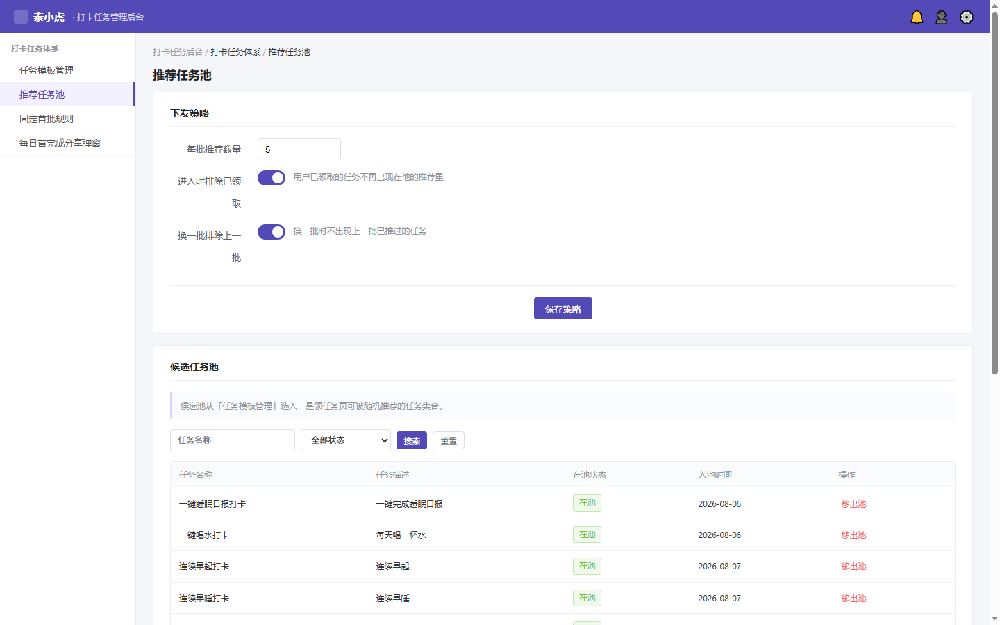
界面与展示规则：列表展示任务名称、任务描述、类型、在池状态；支持按在池状态筛选、分页。
业务逻辑与边界条件：
| 字段名称 | 需求说明 | 备注 |
|---|---|---|
| 任务名称 | 任务模板名称 | — |
| 任务描述 | 任务模板描述 | — |
| 任务类型 | 一键打卡/连续打卡 | — |
| 在池状态 | 在池 / 不在池 | 可切换 |
| 查询条件 | 查询说明 |
|---|---|
| 任务名称 | 文本模糊搜索 |
| 在池状态 | 下拉：全部 / 在池 / 不在池 |
| 字段名称 | 取值逻辑说明 |
|---|---|
| 列表数据 | 取《任务模板表》.inPool + 状态筛选 |
需求影响范围：支持按用户标签固定某些任务出现在该标签用户的首批推荐中（最多 3 个）。涉及终端：平台端后台。
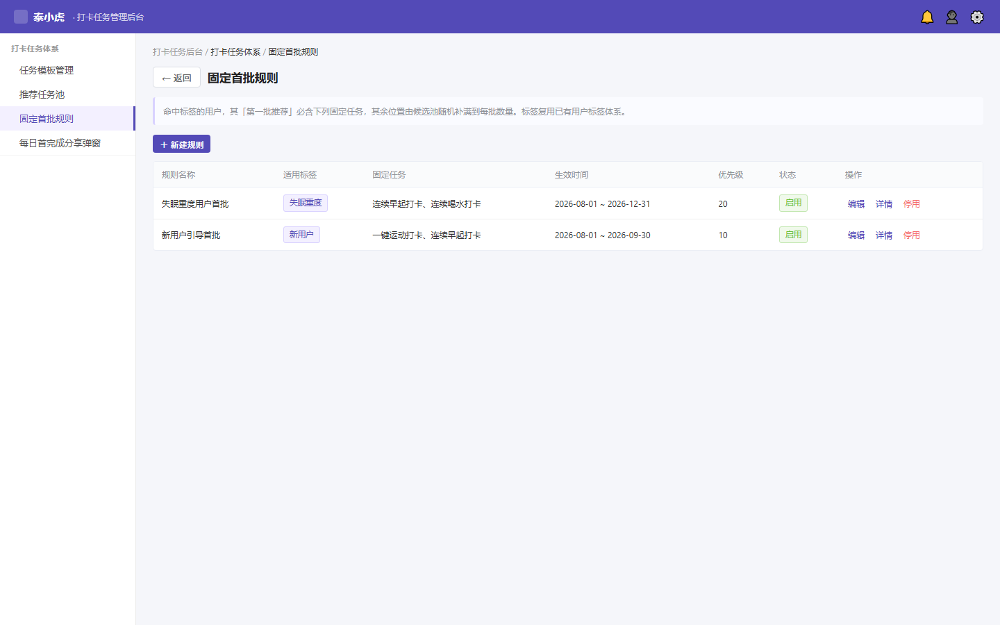
界面与展示规则：列表展示规则名称、用户标签、已选任务、生效时间、优先级、状态、操作。
业务逻辑与边界条件：
| 字段名称 | 需求说明 | 备注 |
|---|---|---|
| 规则名称 | 规则名称 | — |
| 用户标签 | 命中该规则的用户标签 | — |
| 已选任务 | 最多 3 个任务名称 | — |
| 生效时间 | YYYY-MM-DD ~ YYYY-MM-DD | — |
| 优先级 | 数字越大越优先 | — |
| 状态 | 启用/停用 | — |
| 操作 | 编辑/详情/停用/启用/删除 | — |
| 字段名称 | 取值逻辑说明 |
|---|---|
| 列表数据 | 取《固定首批规则表》 |
| 已选任务名称 | 规则.tasks 关联《任务模板表》.name |
需求影响范围：配置规则的标签、任务、生效时间与优先级。涉及终端：平台端后台。
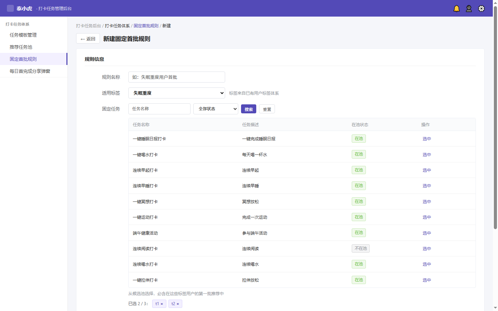
界面与展示规则：表单含规则名称、用户标签下拉、生效时间（起止日期）、优先级、已选任务标签区、候选任务筛选表格。
业务逻辑与边界条件：
| 区域 | 字段 | 功能逻辑说明 | 备注 |
|---|---|---|---|
| 基础信息 | 规则名称 | 必填，文本 | — |
| 基础信息 | 用户标签 | 下拉多选，取已有用户标签体系 | — |
| 基础信息 | 生效时间 | 日期段选择器，开始≤结束 | — |
| 基础信息 | 优先级 | 必填，整数，越大越优先 | — |
| 任务选择 | 已选任务 | 标签展示，最多 3 个，可删除 | — |
| 任务选择 | 候选任务表 | 按名称/在池状态筛选，点击选中/取消 | — |
| 字段名称 | 取值逻辑说明 |
|---|---|
| 用户标签 | 取《用户标签体系表》（已有体系，复用） |
| 候选任务 | 取《任务模板表》inPool=true & status=online |
| 已选任务 | 编辑时取《固定首批规则表》.tasks |
需求影响范围：展示固定规则详情。涉及终端：平台端后台。
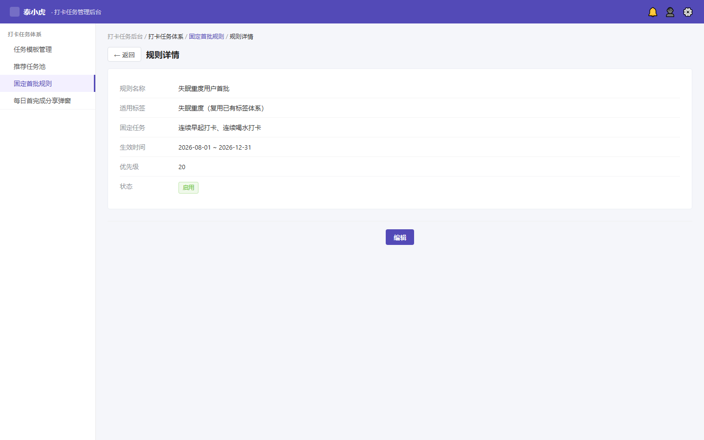
界面与展示规则：只读展示规则名称、标签、已选任务、生效时间、优先级、状态。
| 字段名称 | 取值逻辑说明 |
|---|---|
| 详情字段 | 取《固定首批规则表》单条记录 |
需求影响范围：运营可配置 C端每日首完成弹窗的文案、背景图与每日次数。涉及终端：平台端后台。
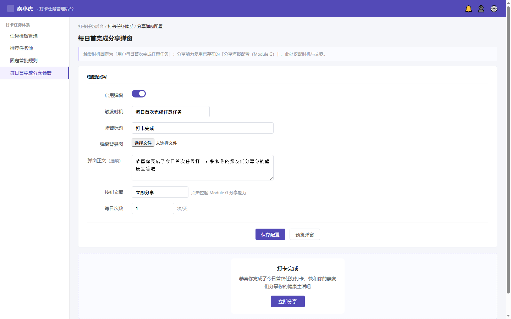
界面与展示规则：表单含启用开关、触发时机（固定为「用户每日首次完成任意任务」）、弹窗标题、弹窗背景图上传、弹窗正文（选填）、按钮文案、每日次数、预览弹窗。
业务逻辑与边界条件：
| 区域 | 字段 | 功能逻辑说明 | 备注 |
|---|---|---|---|
| 基础设置 | 启用开关 | 布尔，默认关闭 | 总开关；关闭时 C端每日首完成不弹窗 |
| 基础设置 | 触发时机 | 固定文本「用户每日首次完成任意任务」，不可编辑 | 决定 C端弹窗触发条件 |
| 基础设置 | 弹窗背景图 | 文件上传，accept=image/*，前端 base64 预览；上传后转存对象存储 | 铺满 C端弹窗容器背景，无图时背景为 #FFFFFF |
| 文案 | 标题 | 必填，文本，默认「打卡完成」 | C端弹窗主标题 |
| 文案 | 正文 | 选填，文本，默认「恭喜你完成了今日首次任务打卡，快和你的亲友们分享你的健康生活吧」 | C端弹窗描述；空正文时不渲染描述行 |
| 按钮 | 按钮文案 | 必填，文本，默认「立即分享」 | 决定 C端分享弹窗主按钮文案 |
| 规则 | 每日次数 | 必填，正整数，默认 1 | 同一用户每日最多弹出次数 |
| 分享内容 | 分享图片（海报） | 文件上传，accept=image/*；用于微信会话缩略图 thumb + 落地页头图 | 可与弹窗背景图同图或独立，⚠️ 待确认 @产品 |
| 分享内容 | 分享文案 | 必填，文本，默认「每天打卡，养成健康好习惯，领取虎力值换好礼」 | 微信会话描述 desc；与弹窗正文可不同 |
| 分享内容 | 落地页链接 | 文本，默认 https://h5.taixiaohu.com/sleep-share?from=share&task=first | 分享卡片点击跳转目标，⚠️ 待确认 @产品/研发：域名与路径 |
| 字段名称 | 取值逻辑说明 |
|---|---|
| 配置数据 | 取《分享弹窗配置表》单条记录（全局唯一配置） |
| 背景图 | 配置表 .thumb（缩略图/海报背景） / 上传后转存对象存储 |
运营后台仅控制「是否启用、背景图、标题、正文、按钮文案、每日次数」；C端弹窗其余视觉样式（尺寸、圆角、颜色、字号、间距、动效、按钮样式）严格遵循 PRD §4.1.9 视觉样式规范，本期不开放后台配置，避免各端体验不一致。
| C端元素 | 固定样式 | 后台可配置项 |
|---|---|---|
| 弹窗尺寸/圆角/位置 | 宽度 280dp、圆角 16dp、垂直居中 | 不可配置 |
| 弹窗背景 | 无图时 #FFFFFF；有图时 object-fit: cover 铺满容器 | 弹窗背景图 |
| 标题/正文 | 字号/字重/颜色固定；仅文案可变 | 标题、正文 |
| 主按钮 | 品牌绿背景 #07C160、白色文字、44dp 高、圆角 22dp；仅文案可变 | 按钮文案 |
| 次按钮 | 透明背景、品牌绿描边；文案固定「获取更多任务」 | 不可配置 |
| 关闭方式 | 点击遮罩关闭；关闭 icon 默认不展示 | 不可配置 |
| 动效 | 缩放+渐显 250ms；退场 200ms | 不可配置 |
下列为本期需关注的性能关注点与建议基线（具体 SLA 阈值 ⚠️ 待确认）：
本期范围：C端任务闭环运行于 Android / iOS 原生 App。老版本 App（低于 ⚠️ 待确认 最低版本）不显示任务入口，后台新配置对其不生效。
本需求埋点事件与属性严格遵循《泰小虎埋点规范 v2.3》。
本期涉及事件清单：
| 事件英文名 | 事件显示名 | 所属层 | 平台 | 触发时机 | 必含上报参数(友盟中文名) | 备注 |
|---|---|---|---|---|---|---|
| page_view | 页面浏览 | L1 | Android/iOS | 进入各页面 | 页面名称/页面路径/来源页面 | 各新页面 |
| tab_switch | Tab切换 | L1 | Android/iOS | 健康/泰小虎/服务 Tab 切换 | 来源Tab/目标Tab | — |
| button_click | 按钮点击 | L1 | Android/iOS | 点击任务/领取/完成/分享等按钮 | 页面名称/按钮名称 | — |
| popup_view | 弹窗曝光 | L1 | Android/iOS | 日报弹窗/完成弹窗/分享面板展示 | 弹窗实例ID/弹窗名称/弹窗类型 | — |
| popup_close | 弹窗关闭 | L1 | Android/iOS | 弹窗关闭 | 弹窗实例ID/关闭方式/停留时长 | — |
| task_claim | 开启健康打卡 | L2/L3 | Android/iOS | 用户确认开启健康打卡 | 任务ID列表 | ⚠️ 待确认 @数据：30事件目录未覆盖，需埋点评审 |
| task_complete | 完成任务 | L2/L3 | Android/iOS | 用户完成打卡 | 任务ID/任务类型 | ⚠️ 待确认 @数据：30事件目录未覆盖，需埋点评审 |
| task_share | 任务分享 | L2/L3 | Android/iOS | 用户点击分享 | 分享渠道 | ⚠️ 待确认 @数据：30事件目录未覆盖，需埋点评审 |